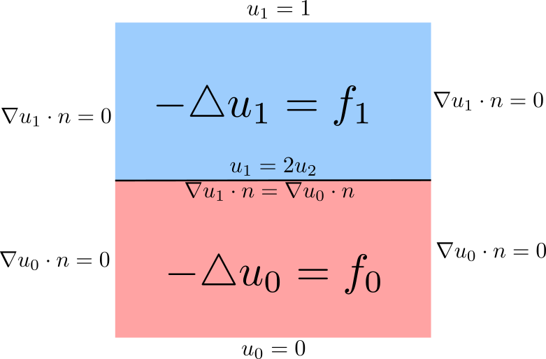

Linear Problem
Problem Description
Let us consider square domain divided into two parts. We will solve laplace equation in both parts of the domain. We prescribe standard boundary conditions on the sides od the domain (see the figure below). Moreower, it is necessary to set the interace conditions.
{kind=link}
We can write the weak formulation in the following form.
Implementation
For this example we will need to import LinearInterfaceSolver and interface.
from InterfaceSolver import LinearInterfaceSolver
from InterfaceSolver import interface
We load the mesh and we build marks on subsets. Moreover we will crate a Measure dX, which takes into acount the subdomains.
mesh = Mesh("mesh/mesh.xml")
marker = MeshFunction("size_t", mesh, mesh.topology().dim(), 0)
# mark cells ... 1 bottom ; 0 top
for c in cells(mesh):
marker[c] = c.midpoint().y() < 0.5
dX = Measure("dx")(domain=mesh, subdomain_data=marker)
Then we label parts of the boundaries.
# boundary
top = CompiledSubDomain("near(x[1], top) && on_boundary", top = 1.0)
bottom = CompiledSubDomain("near(x[1], bottom) && on_boundary", bottom = 0.0)
middle = CompiledSubDomain("near(x[1], middle) ", middle = 0.5)
bcb = DirichletBC(V, Constant(0.0),bottom)
bct = DirichletBC(V, Constant((1.0)), top)
bcm = DirichletBC(V, Constant((0.0)), middle)
Further we need to create function spaces and functions similarly as in FEniCS.
# function space
V = FunctionSpace(mesh,'CG',1)
v = TestFunction(V)
u = TrialFunction(V)
sol = Function(V)
We label the interface facets boundary. We use for that function interface, but it can be done in a different way.
def interface_func(x, y):
return y-0.5
interface_marker = interface(mesh, interface_func, val=1)
We will define UFL forms
# right-hand side
a1 = inner(grad(u), grad(v))*dX(1) # bottom
a0 = inner(grad(u), grad(v))*dX(0) # top
# left hand side
f1 = Expression('exp(-(x[0]-0.5)*(x[0]-0.5)-(x[1]-0.5)*(x[1]-0.5) )', degree=2)
l1 = 10.0*f1*v*dX(1)
f0 = Expression('exp(-(x[0]-0.5)*(x[0]-0.5)-(x[1]-0.5)*(x[1]-0.5) )', degree=2)
l0 = -10.0*f0*v*dX(0)
For solving the problem, the class LinearInterfaceSolver has to be initialised. Afterwards the we will call method solve.
# solve
solver = LinearInterfaceSolver(
sol, marker, interface_marker, interface_value=1, cell_val=0)
solver.solve(a0, a1, a_interface, l0=l0, l1=l1, l_interface=None,
bcs0=[bct], bcs1=[bcb], bcs_zero1=[bcm])
Then the result can be stored
# save and plot
sol.rename('u','u')
with XDMFFile(comm,"{}/{}.xdmf".format('.','u') ) as xdmf:
xdmf.parameters["flush_output"] = True
xdmf.parameters["functions_share_mesh"] = True
xdmf.write(sol)